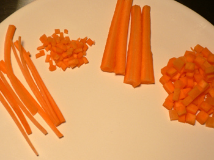

Leland v. taillage

After my knife slipped off the carrot and into the first knuckle of my left middle finger last night, I decided that I hate these cursed hard-as-wood vegetables. My anti-carrot sentiments only increased until I had my way with one tonight in the comfort of my own kitchen. I eked out a decent julienne, brunoise, and macédoine—the jardinière is deplorable—and I sharpened my school knife to the point where it’s not scarily dull anymore (Mom is always popping up on my shoulder and saying, “You can’t cut yourself with a sharp knife!”).
But none of this will make any difference when we progress to tournage tomorrow night; I’m already plotting out strategic Band-Aids to protect my delicate digits from further damage. Fancy French knifework is hard, and it may be especially hard for people like me who consider themselves competent cooks. I can turn out a decent meal for a group of friends, but can I really use my knife precisely? I never cut vegetables like this; I’m content to chop them coarsely by hand or in the food processor. But I appreciate the pedagogical value of forcing us to use our hands, and I’ll do my best to learn it (although I’m prepared to never master it, and to be content with my own caveman-like knife handling).
Comments
While I love the meaning behind your mom’s remonstrance, I have the scars to show that you very much can, in fact, cut yourself with a very sharp knife! lol. Good luck with the tournage!
What’s the French for “The more things change, the more they remain the same”? One of my scariest Mom experiences was when you were a little boy and almost removed a finger trying to cut a big orange in half with my Chinese vegetable cleaver (which probably wasn’t very sharp). But in fact, even if it had been sharp, cutting round or hard things can be tricky and you can hurt yourself with sharp knives.
Tournage was the death of me in my apprentice days. I was introduced to it on my very first day at the Watergate by the Vietnamese vegetable girl, who gave me a 5-gallon bucket and a 50-pound bag of potatoes and said, “Make ‘turn potatoes’.” Then while she carved about half the bag I turned out one monstrous tuber, making her cluck her tongue with exasperation. I eventually sort of got the hang of it (after months) but never really got the point. I remember coming home and telling my folks about all the waste, since you carve about half the potato away, and my grandmother, who even then was slipping into Alzheimer’s, exclaiming, “They could sell their garbage!”
It’s been a long time since I cut myself while slicing food. If I remember correctly, the last time was when I was slicing a lime with a dull knife about four years ago. Keep those knives sharp! (And, um, your wits sharper?)
I am forever slicing my hands at work, on both knives and the damn industrial mixer, but I suppose that is another post. My youngest sister did manage to slice one of her fingers while trying to cut a banana with a BUTTER KNIFE. Four stitches. I think sharp or dull, kitchen work is just inherently dangerous.
That potato story is an amazing read. And I’ve got a kitchen scar on my thumb right now.
More often than knife cuts I would cut my hands on the big wrap cutters we had in the kitchen, for foil and plastic wrap. I don’t know if I was clumsy or hung over, but I would sometimes knock them askew or knock my hands right into the sharpish, jagged teeth and just slash myself right open. Those were some nasty, long-time-healing cuts, too.
And yes, the big mixers, because we used our hands as scrapers, getting them right next to the blades.
I think that saying "you can never cut yourself on a sharp knife came from your grandpa. He was always telling me that as I cut myself again and again!
Add a comment